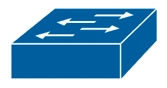
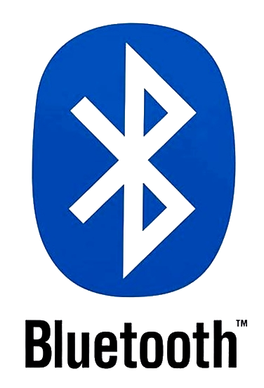

Comme toutes les constructions structurées, un réseau informatique est avant tout caractérisé par son architecture, notamment :
- le nombre et la diversité des éléments qui le composent,
- l'étendue géographique couvrant la totalité de ces éléments,
- mais sa topologie, c'est‑à‑dire la manière globale dont ses éléments sont reliés.
Par analogie, si l'on considère un réseau ferroviaire, on peut distinguer plusieurs types de liaisons (TGV, TER, etc.) et une topologie présentant des pôles étoilés et de nombreux nœuds terminaux.
Dans le cas d'un réseau routier, on a également plusieurs types de voies (rues, grandes avenues, autoroutes), mais aussi d'interconnexions (carrefours, échangeurs…), et une topologie essentiellement maillée, où les impasses sont rares.
L'architecture des réseaux informatiques est en général plus complexe à analyser que celles des autres réseaux. En effet :
- la diversité des éléments est très grande – qu'on songe aux différents types de liaisons : câbles électriques, fibre optique, ondes – avec de très nombreuses catégories dans chaque technologie ;
- à la structure matérielle d'un réseau se superposent toujours plusieurs couches logicielles qui peuvent changer radicalement la topologie mise en œuvre.
Toutefois, l'architecture des réseaux informatiques a évolué ces vingt dernières années avec une tendance à l'uniformisation. Sauf dans les réseaux dits « industriels » ou apparentés, les topologies en bus ou en anneau sont devenues obsolètes, même à grande échelle. La connaissance de ces topologies ne présente désormais qu'un intérêt secondaire, réservé pour la maintenance de réseaux anciens ou la spécialisation sur des technologies spécifiques.
Dans le prolongement du chapitre R1‑I, ce cours a pour principal objectif de dresser un panorama des architectures les plus courantes de réseaux informatiques.
- Des éléments de la théorie des graphes sont donnés en préambules, car ils recèlent des concepts fondamentaux pertinents pour décrire la topologie des réseaux.
- Puis on aborde les principes généraux de l'architecture des réseaux, en détaillant les notions de nœud et de liaison, de réseau public ou privé, etc.
- Puis on décrit les architectures usuelles des réseaux informatiques en procédant par critère d'échelle, c'est‑à‑dire selon la classification usuelle des réseaux dits personnels, locaux, métropolitains, étendus.
- Enfin, on présente quelques logiciels d'analyse et de simulation des réseaux informatiqyes, qui permettent d'un part de visualiser l'architecture d'un réseau existant, et d'autre par de simuler toutes sortes d'architectures pour en expérimenter le comportement.
Cette présentation reste néanmoins superficielle. Seule l'étude détaillée des protocoles de communication permettra ultérieurement d'acquérir une véritable compréhension de l'architecture opérationnelle des réseaux, en tenant compte des aspects logiciels qui sont les plus souvent primordiaux.
Éléments de la théorie des graphes
Dans ce chapitre, il n'est évidemment pas question de mettre en avant une formalisation abstraite des réseaux informatiques par la théorie des graphes, mais simplement d'employer le vocabulaire précis pour y décrire les aspects analogues que l'on observe dans toutes sortes de réseaux.
Notion de graphe
Informellement, un graphe – au sens de la théorie des graphes W – est un objet mathématique composé de :
- nœuds, encore appelés sommets ;
- et d'arcs – ou liaisons – entre les nœuds ;
en faisant abstraction de toute « nature » spécifique à quoi pourraient correspondre ces nœuds et ces arcs.
On schématise usuellement un graphe comme ci‑dessus, avec des ronds pour les nœuds, des traits (ou éventuellement des flèches) pour les arcs.
De même que les nombres permettent de modéliser toutes sortes de phénomènes concrets en termes de quantité et d'ordre, les graphes constituent un concept général très utile de représentation abstraite de structures, notamment dans le domaine des réseaux de transport, de distribution électrique, de communication…
De plus, la théorie des graphes apporte des outils d'analyse (concepts, théorèmes, algorithmes) pour caractériser et évaluer les performances des structures modélisées par des graphes.
Détail des éléments d'un graphe
La définition générale d'un graphe peut s'enrichir de concepts plus élaborés. En particulier, il est très usuel :
- de distinguer plusieurs types de nœuds ;
- d'associer des orientations et des valeurs numériques (ou poids) aux arcs.
Ces concepts supplémentaires permettent de modéliser des aspects très complexes dans les réseaux, par exemple des longueurs de liaisons, des temps de parcours, des débits, etc. Ils ouvrent aussi le champ de la théorie des graphes à des méthodes d'analyse mathématique comme la recherche opérationnelle W et l'optimisation combinatoire W.
Notion de chemin dans un graphe
Dans un graphe orienté, on appelle chemin W une succession de liaisons permettant de relier deux nœuds, l'un étant considéré comme le nœud de départ et l'autre le nœud d'arrivée.
Dans un graphe non orienté, on parle de chaîne pour désigner la même notion, mais sans distinction entre les deux nœuds.
Si les nœuds de départ et d'arrivée sont identiques, on parle de circuit.
La notion de chemin permet d'exprimer les problématiques suivantes, pour deux nœuds donnés dans un graphe :
- l'existence d'un chemin, en tenant compte de l'orientation éventuelle des liaisons ;
- la recherche du plus court chemin, en tenant compte des poids associés aux liaisons.
Ces problématiques ont une grande pertinence dans toutes sortes de contextes de modélisation (réseaux de transport, etc.).
Topologies remarquables des graphes
On parle de topologie W pour désigner telle ou telle structure particulière qu'on peut concevoir dans un graphe.
Pour les réseaux informatiques, on distingue quelques topologies remarquables :
- L'arbre est une topologie dans laquelle on distingue un nœud racine, des nœuds feuilles et aucun circuit.
- Le bus est une topologie sans circuit dans laquelle tout chemin est une partie d'un seul et même chemin (celui reliant les deux nœuds extrêmes).
- l'anneau est une topologie presque comme celle de bus mais dans laquelle les nœuds extrêmes sont reliés et forment un circuit unique.
- le maillage – structure dans laquelle chaque nœud est relié à plusieurs nœuds voisins pour diversifier les chemins possibles entre deux nœuds donnés.
Il est fréquent qu'un réseau informatique soit localement architecturé selon diverses topologies. En effet, chaque topologie présente des avantages et des inconvénients en termes de performances (débits), de complexité, de fiabilité, de sécurité, de coût… Ainsi :
- la topologie en bus est économique du point de vue du câblage mais nécessite des protocoles complexes d'accès au médium (avec gestion des collisions), puisqu'il est partagé par tous les nœuds ;
- à l'inverse, la topologie en arbre est coûteuse du point de vue du câblage mais supprime les zones de collisions ; elle est donc performante en termes de débits ;
- la topologie en anneau, et plus encore la topologie maillée, sont complexes puisqu'entre deux nœuds existent plusieurs chemins, mais cette redondance présente l'avantage d'une meilleure fiabilité, en cas de défaillance d'une liaison.
Le terme de « topologie » ne doit pas être confondu avec celui employé pour désigner une autre branche des mathématiques consacrée à l'étude des objets géométriques en termes de connexité, de compacité, de distances, etc.
Architecture générale des réseaux informatiques
En rappel de l'introduction de ce chapitre, soulignons bien ceci : l'architecture d'un réseau informatique ne peut être comprise qu'en tenant compte des technologies matérielles et logicielles mises en œuvre (sachant que les technologies logiciels peuvent être implémentées en parties par des circuits électroniques).
Cette remarque préliminaire vaut pour tous les éléments constitutifs d'un réseau : les nœuds comme les liaisons ne peuvent être correctement identifiés qu'au regard des aspects matériels et logiciels.
Notion de nœud dans un réseau
Dans un réseau informatique, on appelle nœud W toute machine susceptible d'adopter un comportement « intelligent » au sens où elle ne se contente pas d'émettre systématiquement les mêmes signaux que ceux qu'elle reçoit.
Très souvent, un nœud est doté d'une adresse logicielle – typiquement une adresse IP.
Dans un réseau informatique, les nœuds sont typiquement les ordinateurs, serveurs, routeurs… Toutefois, même si un nœud est identifiable au sens de la théorie des graphes (il semble à la jonction de plusieurs liaisons), il peut être pertinent, à un certain niveau d'abstraction, de ne pas le considérer comme tel. C'est notamment le cas :
- d'une simple dérivation de câblage comme celles qui peuvent être employées (aujourd'hui, très rarement) en technologie RJ45 ou BNC – cf. photo ci‑contre ; en effet, un élément électriquement passif ne peut pas avoir un comportement intelligent ;
- d'un répéteur W, quelle que soit sa technologie (filaire, sans‑fil, etc.), car sa seule fonction est juste de prolonger une liaison ; en termes de topologie, il est pertinent de ne pas considérer de nœud intermédiaire dans cette liaison ;
- et même un concentrateur Ethernet W (en anglais, hub), car il n'assure aucune fonction de routage ni de commutation (il transmet les données qu'il reçoit à tous les équipements qui lui sont raccordés.
Types de liaisons dans un réseau
Dans un réseau, une liaison entre deux nœuds est dite :
Dans les réseaux informatiques, les liaisons de type simplex sont rares.
Dans les réseaux locaux, les liaisons sont le plus souvent réalisées en full duplex. C'est notamment le cas avec le standard Ethernet commuté W qui s'est imposé. Avec les câbles à paires torsadées – la solution technique de loin la plus utilisée aujourd'hui – au moins deux paires peuvent être requises, une pour chaque sens de transmission.
Dans les liaisons à grande distance, sur un médium de transmission constitué de deux conducteurs seulement (typiquement, une liaison série), il existe diverses techniques de multiplexage pour implémenter une liaison de type duplex.
- Le multiplexage fréquentiel W consiste à répartir les signaux sur deux plages de fréquences distinctes de la bande passante du médium (une pour chaque sens).
- Le multiplexage temporel W consiste à répartir périodiquement des signaux dans le temps, selon une période suffisamment courte pour donner l'illusion que les communications opèrent simultanément dans les deux sens.
Modulation dans une liaison à grande distance
Dans les systèmes numériques, l'information est le plus souvent codée sous forme binaire par deux niveaux de tension remarquables – typiquement, 0 - 5 V. Mais il n'est pas commode de transmettre sous cette forme les données sur de longues distances :
- en bande de base (c'est‑à‑dire sans modulation), le potentiel haut (5 V) n'est pas suffisant, il est rapidement atténué par les chutes de tension inhérentes à la résistance des conducteurs (laquelle est proportionnelle à sa longueur) ;
- et par ailleurs, les signaux logiques W sont en fait constitués d'harmoniques dont les hautes fréquences peuvent facilement atteindre les limites de la bande passante des conducteurs ; il en résulte un « émoussage » des créneaux (fronts montants et descendants) que devraient normalement présenter les signaux.
Pour pallier ces problèmes, il existe diverses techniques d'amplification, d'encodage et de modulation du signal W (modulation d'amplitude, de fréquence, de phase, etc.). Une telle opération et sa démodulation réciproque sont opérées par des machines dédiées appelées modem W(pour modulator‑demodulator en anglais), qui constituent alors les deux nœuds d'extrémité de la liaison.
Le coût en termes de débit des opérations de modulation et de démodulation peut être compensé par certaines techniques de modulation numérique qui mettent en œuvre des symboles multi‑bits W.
Spécificité des liaisons sans fil
À toutes les échelles de réseaux, il existe des technologies permettant d'établir des liaisons dites sans‑fil W(en anglais, wireless) : Bluetooth, Wi‑Fi, WiMAX, et toutes les technologies de la téléphonie mobile (GSM, GPRS, UMTS, LTE…). Elles sont principalement motivées par :
- la mobilité qu'elles confèrent aux nœuds terminaux (ordinateurs portables, smartphones…) raccordés ainsi aux réseaux ;
- d'éventuelles économies d'infrastructures (par l'absence de câbles à installer).
En contre‑partie, les performances en termes de débits et de fiabilité de connexion sont en général moindres qu'avec des liaisons câblées ou fibrées.
En termes de topologie, cette mobilité se traduit d'abord par le caractère éphémère des nœuds terminaux et donc de leur liaison dans le réseau. De plus, pour augmenter la mobilité des appareils connectés, en particulier dans les réseaux de grandes tailles, on a tendance à multiplier les points d'accès possibles. Lorsqu'un appareil se déplace physiquement dans le réseau, il est alors souhaitable que sa liaison change automatiquement pour se raccorder au point d'accès le plus proche. On parle d'itinérance W (en anglais, roaming), un concept n'existe pas seulement en téléphonie.
Techniques de partage d'un médium de transmission
Dans un réseau informatique, et comme d'ailleurs dans n'importe quel réseau de transport, sauf cas particuliers et extrémités, le médium de transmission des liaisons – c'est‑à‑dire le support physique des communications – doit presque toujours être partagé entre diverses machines souhaitant communiquer.
C'est évidemment le cas des liaisons sans fil qui utilisent un médium forcément commun (le champs électromagnétique ambiant), mais aussi des liaisons filaires lorsqu'elles occupent une place « stratégique » dans l'architecture du réseau, en particulier si elles sont proches de la racine dans une topologie en arbre.
Il existe différentes techniques de partage d'un médium. La plus usuelle – celle mise en œuvre par le protocole TCP – repose sur la fragmentation des données en paquets, chaque paquet étant numéroté et portant l'adresse des interfaces émettrices et réceptrices. On peut ainsi faire transiter les uns après les autres des paquets issus de communications différentes, au gré de la demande. La durée de transit d'un paquet représente alors une unité indivisible de temps d'occupation du médium.
Cette technique s'apparente à du multiplexage temporel (cf. supra ), mais sans périodicité stricte puisque les paquets peuvent être de taille variable, et même transmis dans un ordre indifférent, ce qui apporte une grande souplesse dans les réseaux fortement sollicités. Elle sera revue en détail au chapitre R3‑I .
Une autre technique importante est le multiplexage fréquentiel W (FDM pour frequency division multiplexing). Basée sur le même principe que le FDD (frequency division duplexing – cf. supra ), cette technique consiste transmettre les données issues de différentes communications sur diverses bandes de fréquence dans la bande passante autorisée par le médium. Superposés lors de la transmission, les signaux sont séparés par filtrage à la réception.
Notion de routage
Dans un réseau informatique, en particulier lorsqu'il s'agit d'une infrastructure de transport de données à grandes distances, toute succession des liaisons parcourues par l'information transmise d'un nœud à un autre est appelée route. Elle correspond à la notion de chemin dans un graphe.
Pour une transmission de données, la détermination d'une route s'appelle le routage W. Cette tâche est accomplie de proche en proche par des machines dédiées appelées routeurs W (cf. le symbole usuel ci‑contre pour ce type de nœud).
Le routage est une tâche complexe qui est assujettie à des protocoles mis en œuvre de façon sur le réseau – en particulier le protocole IP – sur la base des adresses logiques attribuées à ses nœuds.
Sans entrer dans les détails, chaque routeur dispose d'une table de routage qui, pour chaque adresse IP de réseau local destinataire, indique l'adresse IP de l'interface réseau d'un routeur voisin qui est sur une « bonne route » pour mener au réseau destinataire ; en anglais, on parle de next hop, c'est‑à‑dire de « prochain saut ». Le routage entre deux réseaux locaux éloignés est ainsi déterminé de proche en proche par les routeurs.

La table de routage d'un routeur peut être renseignée par un technicien réseau dans un fichier de configuration. On parle alors de routage statique.
Mais il existe aussi des technologies de routage dynamique W. Dans un réseau local, on peut configurer les routeurs pour qu'ils utilisent le protocole RIP (routing information protocol) qui permet aux routeurs d'enrichir automatiquement leur table de routage au fur et à mesure des requêtes de routage qui leur sont soumises.
- Lorsqu'un paquet de données comporte une adresse IP de réseau destinataire ne figurant pas dans la table de routage, le routeur interroge ses nœuds voisins, qui eux‑mêmes peuvent récursivement propager la requête de proche en proche, jusqu'à obtenir une réponse positive.
- Cette réponse remonte alors la chaîne de requête jusqu'au routeur qui en était à l'origine. Ce dernier peut alors compléter sa table de routage et router le paquet.
À l'échelle de l'Internet, la gestion des tables de routage est assurée par d'autres protocoles plus complexes, dits applicatifs, notamment BGP W (border gateway protocol) qui permet le partage de routes entre systèmes autonomes (cf. chap. R1‑I ).
Cas des réseaux locaux
Dans un réseau local, on parle préférentiellement de chemin pour désigner la succession des liaisons permettant à deux machines de communiquer.
Lorsque le réseau local adopte une topologie en arbre (c'est presque toujours le cas aujourd'hui), alors il n'y a qu'un seul chemin possible entre deux machines. La problématique de la recherche du chemin est donc plus simple que celle du routage. Elle est réalisée par commutation, sur la base des adresses physiques – dites MAC (cf. chap. R1‑III ) – des machines.
Une machine assurant la fonction de commutation est appelée un commutateur W (cf. son symbole usuel ci‑contre). Dans la pratique, on le désigne par son terme anglais switch.
Notion de lien local
Dans un réseau, on considère implicitement le lien local (en anglais, link‑local) comme étant l'ensemble des nœuds qui sont reliés entre eux sans routeur intermédiaire, c'est‑à‑dire soit directement, soit via un ou plusieurs commutateurs (cf. l'exemple en figure ci‑dessous).
La notion découle en fait de celle d'adresse de lien local – en anglais, link‑local address W – qui existe aussi bien en IPv4 (cf. chap. R1‑III ) qu'en IPv6 (cf. chap. R1‑III ).
Notions de réseau public et privé
On qualifie de privé W un réseau informatique dont les nœuds ne sont pas accessibles par routage depuis des réseaux externes (hormis son nœud d'interconnexion – la passerelle, cf. infra). Par opposition, on qualifie de public tout réseau qui n'est pas privé.
À l'intérieur d'un réseau privé, si les communications opèrent avec les mêmes protocole que pour l'Internet, on parle d'Intranet W.
Les qualificatifs « public » et « privé » appliqués aux réseaux n'ont donc aucun rapport avec le fait que l'organisme qui gère tel ou tel réseau ait un statut juridique public ou privé. Typiquement :
- les réseaux domestiques des particuliers et les réseaux des entreprises ou d'autres organismes (universités, ministères, etc.) sont principalement constitués en réseaux privés ; ils peuvent néanmoins comprendre une partie publique, par exemple pour donner un accès général à des serveurs de données ;
- les grands réseaux (backbones) des opérateurs de transport de l'Internet, et leurs réseaux d'accès sont des réseaux publics, à l'exception de certaines parties privés.
Interconnexion entre deux réseaux
Le nœud d'interconnexion entre deux réseaux distincts parce qu'ils sont l'un public et l'autre privé ou qu'ils mettent en œuvre des technologies de transmission différentes, est appelé passerelle W – en anglais, gateway.
Une passerelle est le plus souvent représenté par le même symbole qu'un routeur, mais aussi parfois avec un signe distinctif comme celui figuré ci‑contre.
Une passerelle est un équipement de type routeur qui intègre également d'autres fonctionnalités, typiquement :
- un modem, et on parle alors de modem‑routeur ;
- un module Wi‑Fi (interface, antenne) et on parle alors de routeur Wi‑Fi.
Ainsi, une box d'abonné à l'Internet est un équipement qui, usuellement, intègre deux passerelles :
- un modem‑routeur pour l'interconnexion entre le réseau local et l'Internet ;
- un modem‑routeur pour l'interconnexion, au sein du réseau local, entre le réseau Ethernet et le réseau WiFi.
Techniquement, on attribue aux interfaces des machines d'un réseau privé des adresses IP dites privées parce que non routables sur l'Internet, au sens où elles sont exclues des tables de routage dans les parties publiques du réseau global (cf. chap. R1‑III ).
Pour que les applications clientes s'exécutant sur les machines d'un réseau privé puissent néanmoins envoyer des requêtes et obtenir des réponses à l'extérieur du réseau, la passerelle met alors en œuvre une technique logicielle dite de translation d'adresse W — en anglais, network address translation ou NAT.
Notion de zone démilitarisée (DMZ)
Dans un réseau privé, une zone démilitarisée W – en anglais, demilitarized zone, abrégé DMZ – est un sous‑réseau dont les interfaces sont rendues accessibles depuis l'extérieur (en général, l'Internet). Il s'agit donc d'une partie publique.
Typiquement, on y héberge des serveurs de pages web, de messagerie, etc.
Lorsqu'un réseau comporte une DMZ, il est impératif que le reste du réseau – la partie privée – soit protégée des intrusions depuis l'extérieur. On utilise pour cela un composant logiciel appelé pare‑feu W (en anglais, firewall).
Par ailleurs, une DMZ n'est pas nécessairement accessible sans restriction depuis la partie privée du réseau. Un autre logiciel pare‑feu peut également gérer les autorisations internes d'accès aux ressources stockées dans la DMZ. Une architecture classique consiste donc à isoler la DMZ entre deux pare‑feu (cf. fig. ci contre).
Notions de réseau virtuel
Dans un réseau informatique – voire plusieurs réseaux interconnectés – il est possible par diverses techniques de sélectionner certains nœuds pour former un (sous‑)réseau virtuel distinct du reste du réseau formé par les autres nœuds.
Deux notions ne doivent pas être confondues :
- Si, dans un réseau local (LAN – cf. infra ), on délimite un sous‑réseau par un plan d'adressage IP approprié (cf. chap. R1‑III ), on parle de VLAN W (virtual local area network).
- Si, à grande échelle, grâce à des solutions logicielles spécifiques, on établie des liaisons « privilégiées » entre des machines situées dans des réseaux locaux différents, on crée une sorte de réseau local virtuel et on parle alors de VPN W (virtual private network).
Encore une fois, on voit que les aspects logiciels ont une importance déterminante en termes de compréhension de l'architecture des réseaux :
- deux machines peuvent être voisines, raccordées au même commutateur, et pourtant ne pas pouvoir communiquer parce qu'elles sont adressées sur deux VLAN distincts, sans passerelle commune ;
- deux machines peuvent être très distantes, raccordées à deux réseaux locaux distincts, mais pouvoir communiquer parce qu'elles sont reliées par un même VPN.
Types de diffusion
Dans un réseau informatique, l'émission de donnée peut opérer via plusieurs types de diffusion, selon le nombre d'adresses destinataires des données.
Les différents types de diffusion sont les suivants.
- La diffusion à destinataire unique W est communément appelée unicast (on peut aussi parler de diffusion point à point). À proprement parler, il ne s'agit pas de diffusion mais simplement d'émission.
- La diffusion à destinataires multiples W est appelée communément multicast (on peut aussi parler de diffusion multipoint ou de multidiffusion).
- La diffusion générale W est communément appelée broadcast ; elle couvre toutes les adresses d'un (sous‑)réseau.
- Il existe également la diffusion dite anycast W (sans terme équivalent en français) qui consiste à cibler la première adresse accessible figurant dans une liste d'hôtes pour fournir un service demandé.

Architecture des réseaux par critère d'échelle
Le choix de l'architecture d'un réseau informatique dépend bien entendu de sa fonction principale (réseau domestique, boucle locale, réseau de transport, etc.) mais aussi de son échelle – c'est‑à‑dire de son étendue géographique, mais aussi de son nombre de nœuds. On peut facilement concevoir qu'il est plus économique d'opter pour une topologie en anneau plutôt qu'en maillage pour un réseau à grande échelle.
Dans la pratique, on distingue principalement quatre grands types de réseaux par ordre croissant d'échelle : les réseaux personnels, les réseaux locaux, les réseaux métropolitains et les réseaux étendus.
Ce critère de classement reste un peu subjectif, il ne doit pas être considéré comme strict car il existe une sorte de continuum de tailles entre deux catégories successives.
Réseaux personnels (PAN)
Un réseau personnel W – en anglais personal area network ou PAN – est un réseau informatique constitué :
- de quelques nœuds – de l'ordre d'une dizaine maximum ;
- de liaisons courtes – quelques dizaines de mètres tout au plus.
Réseaux personnels sans fil (WPAN)
Un réseau personnel sans fil (en anglais, WPAN) est un réseau personnel où la communication entre les nœuds est opérée sans liaisons câblées.
Son éventuel nœud de raccordement à l'Internet (borne Wi‑Fi publique ou antenne de téléphonie mobile) n'est pas toujours considéré comme faisant partie du réseau.
-

- Un simple smartphone et ses accessoires (montre, casque, enceinte…) constitue un WPAN. La technologie de liaison dominante est basée sur la norme Bluetooth W. Elle forme des topologies en étoiles qui sont animées selon un modèle maître‑esclaves.
- De même, certains systèmes embarqués domotiques peuvent former, à une échelle un peu plus grande (bâtiment), un WPAN, à l'aide de technologies de liaison comme ZigBee W, Z‑Wave W, Enocean W… Ces réseaux peuvent être architecturés selon diverses topologies : en étoile, maillée…
Réseaux domestiques
Lorsqu'un réseau personnel est déployé à l'échelle d'un appartement ou d'une petite maison, on parle de réseau domestique.
Au delà d'une certaine échelle – grande maison très équipée – on peut parfois considérer qu'il s'agit d'un réseau local même si son usage est « domestique ».
En règle générale, ces réseaux adoptent une topologie en arbre avec pour racine la box d'abonné à l'Internet, usuellement fournie par le FAI.
En apparence simple, car de faibles dimensions, une box FAI remplit de nombreuses fonctions.
- Dans le réseau local, elle intègre :
- un commutateur (switch) à 4 ou 5 ports RJ45 ;
- une routeur Wi‑Fi pour offrir un point d'accès sans fils ;
- Pour l'accès à l'Internet, elle intègre :
- un routeur passerelle qui lui permet de jouer le rôle de passerelle par défaut du réseau ;
- un modem ADSL ou fibre, afin de transmettre les données sur la liaison longue distance de la boucle locale.
De plus, elle assure également des fonctions de téléphonie IP et de télévision IP (cf. chap. R1‑I ).
Typiquement, un réseau domestique peut raccorder :
- un ou plusieurs ordinateurs et divers périphériques (imprimante, serveur de stockage dit NAS W, etc.), qui peuvent être reliés à la box par connexion :
- filaire – et éventuellement via un switch supplémentaire ;
- sans‑fil – et éventuellement via un routeur Wi‑Fi plus puissant ;
- CPL W (courant porteur de ligne) ;
- un téléphone « fixe » raccordé à la box par un câble téléphonique, éventuellement multi‑postes ;
- une « box TV » associé à un téléviseur, qui est éventuellement raccordée à box principale par CPL ;
- divers appareils mobiles itinérants (smartphones, tablettes, etc.) reliés à la box par Wi‑Fi.
La figure ci‑dessous donne un exemple possible d'architecture pour un tel réseau domestique déjà bien développé.
Réseaux locaux (LAN)
Un réseau local W – en anglais local area network ou LAN – est un réseau informatique plus grand qu'un réseau personnel, mais dont l'étendue reste limitée à un voire quelques bâtiments réparties sur une ou plusieurs parcelles voisines.
Typiquement, il s'agit d'un réseau d'entreprise ou un organisme de taille moyenne, d'un lycée ou d'un petit campus universitaire. Un réseau local peut comporter :
- plusieurs centaines de nœuds, raccordés selon une topologie en arbre voire mixte maillée‑arbre, réalisée par des routeurs et des commutateurs montés en cascade ;
- des liaisons dépassant parfois la centaine de mètres, ce qui oblige alors à employer des technologies réservées usuellement aux réseaux plus grands (répéteurs, fibre optiques, etc.).
La figure ci‑dessous illustre une architecture possible pour un petit LAN, parmi un nombre incalculable d'autres possibilités.
L'architecture d'un LAN peut devenir très complexe lorsque :
- en plus des ordinateurs et des périphériques d'usage courant (imprimantes, scanners…), de nombreux téléphones fixes sont raccordés pour exploiter au mieux les protocoles VoIP ;
- l'organisme (entreprise ou autre) centralise ses fichiers sur des serveurs et met en œuvre des stratégies locales de stockage et de sauvegarde à travers un sous‑réseau appelé SAN W (stockage area network) ;
- plusieurs points d'accès à l'Internet sont nécessaires, en raison soit du nombre important d'utilisateurs, soit de l'éloignement géographique des bâtiments ;
- des possibilités sont offertes aux utilisateurs de se connecter au LAN depuis l'extérieur, c'est‑à‑dire de mettre en place un accès distant sur DMZ ou via un VPN …
Réseaux locaux « industriels »
On peut aussi déployer un réseau local pour faire communiquer des équipements techniques (capteurs, actionneurs, composants de distribution d'énergie…) dans un environnement « difficile », c'est‑à‑dire soumis à des contraintes sévères (températures, vibrations, normes de sécurité, etc.), par exemple :
- un véhicule (automobile, camion, avion…) ;
- une machine‑outil ou, à plus grande échelle, ligne de production industrielle ;
- une salle de concert, un stade sportif, etc.
On parle alors de réseau local « industriel » et ce concept se distingue de celui de réseau local usuel parce que l'on a recours à des topologies et des technologies spécialisées.
Dans les environnements confinés comme les véhicules ou les machines‑outils, pour minimiser les faisceaux de câbles, on privilégie la topologie en bus et on parle alors de bus de terrain W (en anglais, fieldbus).
La figure illustrant ici l'emploi du bus de terrain CAN W (controller area network) ne donne qu'une représentation très simplifiée de la réalité. Aujourd'hui, même un simple véhicule particulier peut comporter plusieurs dizaines de composants communicants : actionneurs, capteurs de fin de course, etc.
Réseaux métropolitains (MAN)
Un réseau métropolitain W (en anglais metropolitan area network ou MAN) est un réseau informatique qui s'étend à l'échelle d'une grande agglomération ou d'un vaste territoire (département).
Principalement, on distingue deux sortes de réseaux métropolitains, appelés respectivement réseaux de collecte et réseaux de transport.
- Les réseaux de collecte des fournisseurs d'accès agrègent respectivement l'ensemble des boucles locales qu'ils gèrent ; ces réseaux comprennent aussi des serveurs dédiés aux communications (résolveurs et miroirs de bases de données DNS, serveurs DHCP…).
- Les réseaux de transport à l'échelle métropolitaine sont mis en place par des entreprises ou d'autres organismes pour relier des réseaux locaux sur des sites distants les uns des autres. Le plus souvent, les liaisons sont constituées en fibre optique noire (non activée) appartenant à des opérateurs d'infrastructures, auxquelles les entreprises raccordent des routeurs à haute à performance.
Réseaux métropolitains sans fils
À l'échelle d'un réseau métropolitain, la technologie de connexion sans fil la plus développée actuellement la norme dite WiMAX W (Worldwide Interoperability for Microwave Access). Toutefois, en France, elle n'est accessible que sur un petit nombre de territoires, principalement ceux qui sont mal desservis par les réseaux d'accès à l'Internet câblés ou fibrés, pour lesquels elle offre une solution de substitution.
Depuis une douzaine d'années, le développement de la technologie WiMAX semble freiné . On peut émettre l'hypothèse qu'il est concurrencé par celui des systèmes de téléphonie mobile, dont la clientèle est bien établie et dont l'étendue nationale et même internationale répond mieux aux besoins de mobilité sans cesse accrus.
Réseaux étendus (WAN) – systèmes autonomes
Un réseau étendu W (en anglais wide area network ou WAN) est un réseau informatique ou téléphonique qui s'étend à l'échelle d'une d'un pays, d'un continent, voire de la planète entière.
Les réseaux étendus sont de type dorsale W (en anglais, backbone), c'est‑à‑dire des réseaux de transport de données qui relient des réseaux métropolitains ou des réseaux locaux. Ils sont constituées de liaisons fibrées à très haut débit installées sur des longues distances par des opérateurs de câblage qui les louent aux opérateurs de transport (sauf s'ils en sont eux‑mêmes).
Les dorsales adoptent le plus souvent une topologie faiblement maillée constituée principalement de boucles qui, comme pour les MAN d'interconnexion, assurent à moindre coût une redondance simple.
De tels réseaux sont appelés systèmes autonomes car ils sont administrés par des entreprises ou des organismes nationaux qui sont chacun libres de choisir leur stratégies de routage. Pour garantir le bon fonctionnement de l'ensemble du réseau mondial de transport ainsi constitué, ils coopèrent via des protocoles de partages de routes.
- En France métropolitaine (c'est‑à‑dire hors départements et territoires d'Outre‑mer), les principaux réseaux étendus sont :
- les réseaux des opérateurs de télécommunication, notamment :
- Orange (ancien opérateur historique du RTC) dont le réseau ne semble pas publié ;
- Bouygues (qui est également une compagnie de travaux publics) dont la dorsale est nommée Axione ;
- Free (détenu par le groupe Iliad) dont la dorsale est nommée Proxad ;
- Numericable‑SFR W (détenu par le groupe Altice, qui est issu d'anciennes compagnies de distribution d'eau) ;
- le réseau RENATER (réseau national de télécommunications pour la technologie, l’enseignement et la recherche) , qui est aussi l'opérateur de transport du RIE (réseau interministériel de l'état) .
- À l'échelle du continent européen, on peut notamment citer :
Logiciels d'analyse et de simulation de réseaux informatiques
Logiciels d'analyse de réseaux
À partir d'un ordinateur hôte correctement raccordé et configuré, il est possible de déterminer tout ou partie de l'architecture d'un réseau local à l'aide de protocoles comme :
Il existe de nombreux logiciels qui automatisent l'emploi de ces protocoles pour apporter aux utilisateurs une présentation conviviale des résultats (liste des machines, cartographie topologique, etc.). Les pages web suivantes W fournissent une liste partielle de ces logiciels avec d'autres dédiés à des tâches plus spécifiques (analyse de trames, etc.).
Pour débuter, il est évidemment recommandé de se faire la main avec divers logiciels gratuits. Ceux proposés ci‑dessous permettent de scanner toutes les adresses IP dans une plage spécifiée. Ils présentent les résultats sous forme d'un tableau dont les colonnes (adresse MAC, nom du constructeur, etc.) peuvent être paramétrées et triées.

Logiciels de simulation de réseaux
Un logiciel simulateur de réseaux permet d'étudier le fonctionnement de toutes sortes d'architectures de réseau sans matériel autre qu'un simple poste de travail.
Certains logiciels permettent également d'étudier en détail le déroulement des protocoles de communication les plus usuels en visualisant l'acheminement et le contenu (partiel) des paquets de données.
Il existe divers simulateurs de réseaux relativement simples, notamment :
Le logiciel Cisco Packet Tracer

Packet Tracer W est un simulateur de réseau développé par l'entreprise américaine Cisco Systems W, numéro un mondial des équipements réseaux (switch, routeurs, serveurs…).
Packet Tracer est un logiciel multi‑plateforme sous licence propriétaire. Il est néanmoins distribué gratuitement aux centres de formation et aux étudiants pour préparer les certifications CCNA (Cisco certified network associate) et CCNP (Cisco certified network professional) sur les équipements de la marque Cisco.
Cette stratégie est souvent gagnante à long terme car le manque à gagner sur les licences est compensé par la grande visibilité de la marque et la tendance forte des entreprises à acheter des équipements sur lesquels leurs collaborateurs sont formés.
Par rapport aux simulateurs de réseaux usuel, Packet Tracer présente plusieurs intérêts :
- simuler une grande variété d'équipements et de protocoles ;
- présenter une vue physique des installations (représentation des locaux et des faces techniques des équipements), très complémentaire de la classique représentation topologique du réseau simulé ;
- être interfaçable avec certains équipements Cisco sur un réseau réel pour interagir avec.
Néanmoins, il reste limité et ne peut simuler toute la complexité que présentent les réseaux informatiques dans la réalité.
La procédure d'installation du logiciel est conditionnée à la création d'un compte à la Networking academy, via la page web accessible au lien suivant .
- Sur cette page, il suffit de cliquer sur le bouton
Sign up today, de sélectionner la langueEnglish(seul choix) puis de compléter le formulaire de souscription (gratuite) à un compte Netacad… - Une fois que le compte est créé, il suffit de s'y connecter. On peut alors télécharger le fichier d'installation de Packet Tracer qu'on trouve via le menu
Ressources. - Après l'installation, lors du lancement de Packet Tracer, il est encore nécessaire de valider la procédure par une connexion au compte Netacad (sinon le logiciel se ferme automatiquement).
Alternatives à Cisco Packet Tracer
D'autres constructeurs proposent des simulateurs de réseaux pour leurs propres équipements, par exemple :
- Junosphere pour les équipements de la marque Juniper W ;
- eNSP pour les équipements de la marque Huawei W.
Il existe également le simulateur GNS3 W qui est multi‑plateforme, open‑source et gratuit.